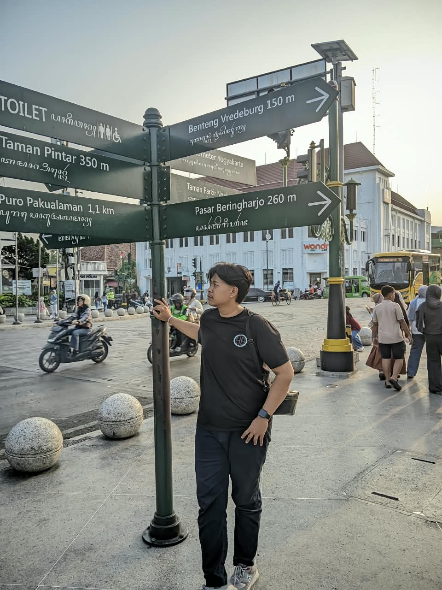

Saya Fernanda Rifky, Mahasiswa Aktif Teknik Informatika yang sedang fokus pada pengembangan web dan pengolahan data. aplikasi web, sampai eksperimen kecil dengan machine learning.

404 Human Error
Thanks your for stopping by.
Saya mahasiswa Teknik Informatika, dengan minat utama pada pengembangan perangkat lunak dan pemrosesan data. Saya senang belajar hal baru lewat proyek nyata — baik itu aplikasi kecil untuk kebutuhan sehari-hari maupun eksperimen algoritma.
Di luar kelas, saya aktif mengeksplorasi pengembangan Frontend dan sedang mendalami pengembangan Backend, manajemen basis data, serta pemodelan kecerdasan buatan. Saat ini terus memperdalam dunia software engineering dan arsitektur sistem.
Membangun aplikasi web berbasis deep learning untuk mengklasifikasikan kesehatan daun menggunakan model arsitektur VGG16 yang terhubung dengan backend Flask dan database SQLite.
Lihat detail kode →Mengembangkan antarmuka pengguna Java Swing di Windsurf yang dilengkapi fitur simulasi pembayaran transaksi Virtual Account menggunakan Midtrans Sandbox API.
Lihat detail kode →Membuat struktur routing, migrasi database, dan pengolahan data menggunakan framework Laravel di atas lingkungan server lokal untuk mendukung sistem informasi berbasis web.
Camming Soon →